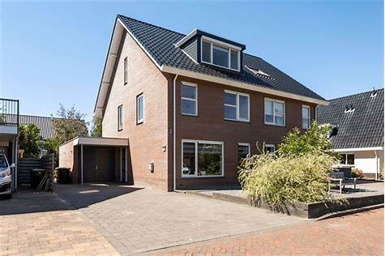
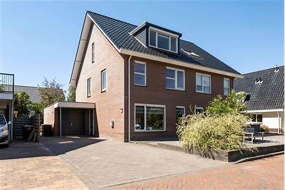
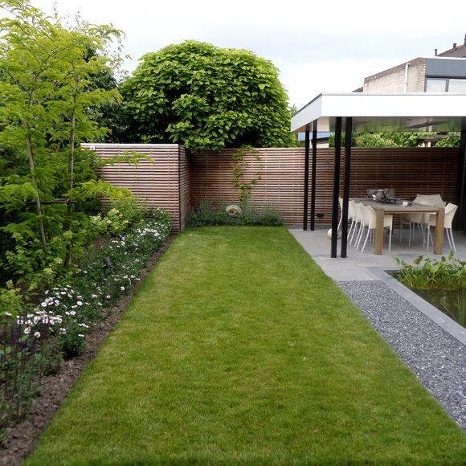
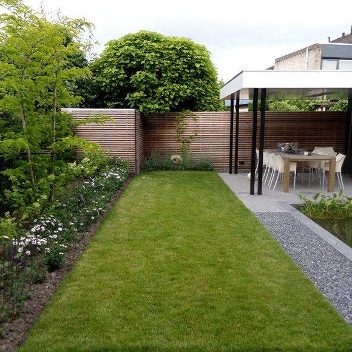
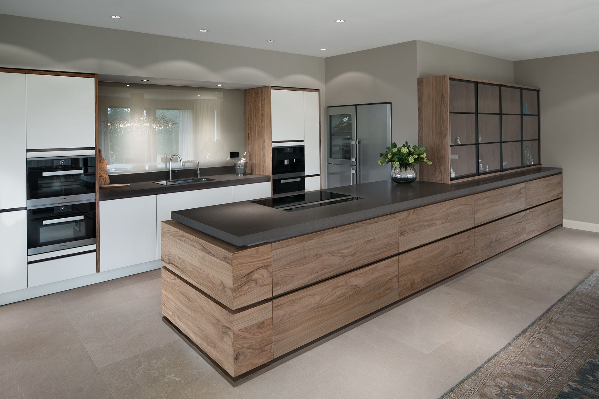
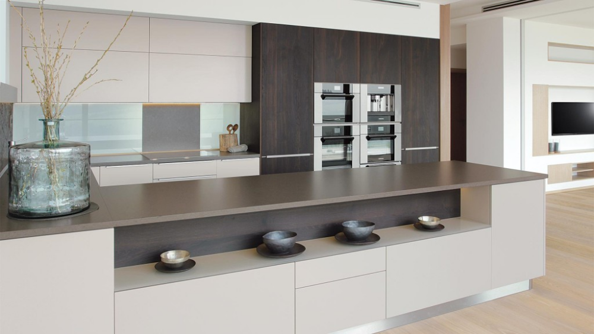
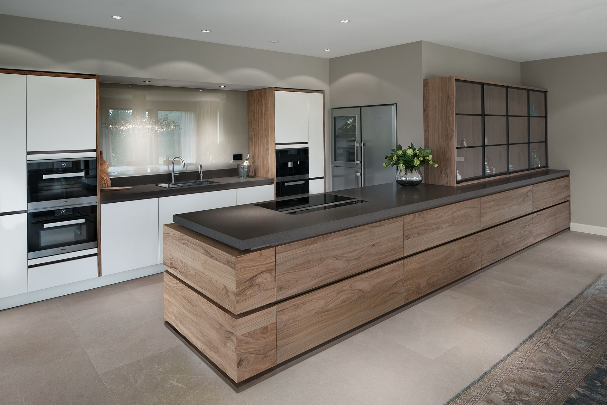
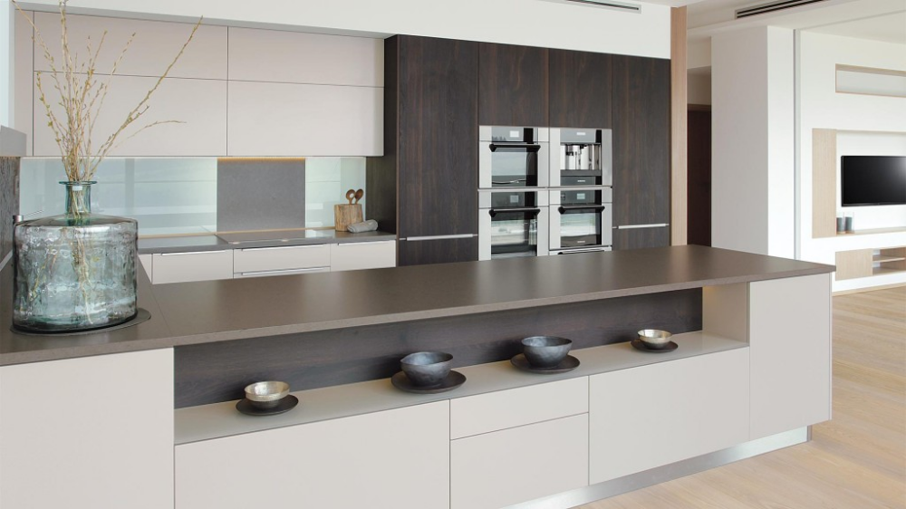
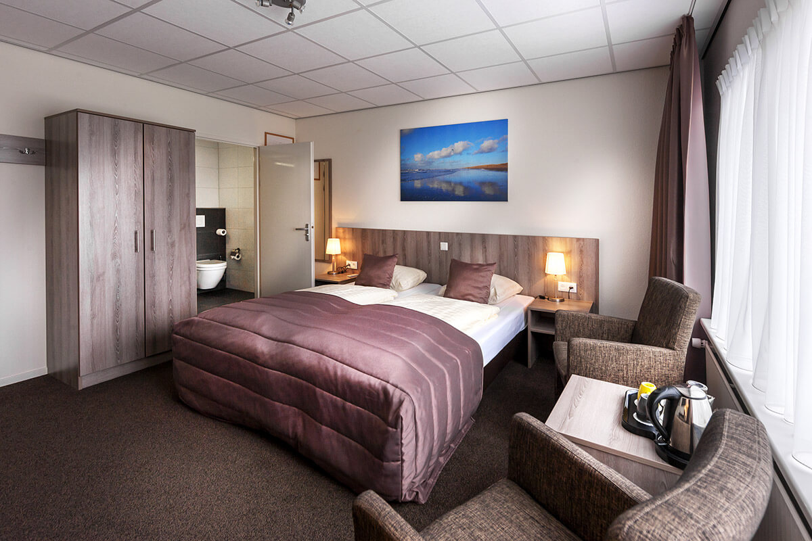
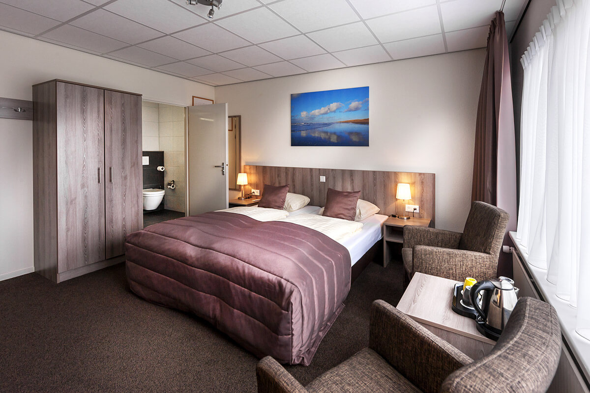

Omschrijving
Deze prachtige woning, welke vroeger diende als traditionele boerderij, is volledig getransformeerd
tot een moderne en comfortabele woonboerderij.
De verbouwing met een prachtige uitzicht die je,
die drie jaar heeft geduurd (van 2018 tot 2021), heeft van het huis een ware parel gemaakt.
Bij de verbouwing zijn veel van de authentieke details behouden gebleven, zoals de oude houtenbalken, de originele ramen en deuren. Binnenin wacht een zee van ruimte, met momenteel maar liefst vijf slaapkamers. Daarbij biedt het voorhuis ruimte aan een Bed & Breakfast voor vijf personen. Daarnaast zit er in de woning nog een B&B (appartement) met eigen ingang. Hier kunnen uw gasten genieten van hun eigen ruimte met privacy en comfort. Dit alles bevindt zich op een locatie die het beste van beide werelden biedt. U bent nabij het centrum van het dorp en tegelijkertijd omringd door de pracht van de natuur, terwijl de levendigheid van Schagen ook binnen handbereik is.
Kom binnen
Zodra u via de voordeur de hal betreedt wordt uw aandacht direct getrokken naar de karaktervolle tegeltjes, die u ook terug ziet bij de gezellige openhaard. De hal leidt u verder naar de sfeervolle U-vormige woonkamer. In het hart van deze woonruimte bevindt zich een prachtige ruime keuken. Een uniek en opvallend detail is de oude werkbank die dient als kookeiland. De keuken straalt mede hierdoor een warme sfeer uit. Met een grote eettafel naast de keuken, is deze ruimte ideaal voor gezellige diners met vrienden en familie.
In de woonkamer zijn talloze leuke details te ontdekken, waaronder een verlicht nisje, originele deuren en een luik die geopend kan worden naar de eerste verdieping. Voor de kinderen is er een speelkamer, afgescheiden met stalen taatsdeuren. De originele ramen in het woongedeelte zijn bewaard gebleven, waardoor de klassieke uitstraling behouden is. De houtkachel zorgt voor een extra warmte en sfeer tijdens de koelere dagen. Op de begane grond vindt u ook een royale bijkeuken met een wasruimte en extra badkamer. De overige ruimte is benut als kantoor.
De bovenverdieping is werkelijk een droom die uitkomt, hier voelt u de zorg en vakmanschap waarmee deze woning is verbouwd. Hier vindt u een stijlvolle master bedroom met recht tegenover op de gang een ruime inloopkast (welke tevens omgebouwd kan worden tot slaapkamer). Voor de kinderen zijn er twee fantastische kinderkamers gecreëerd, elk met een eigen thema. De zeer ruime badkamer heeft een dubbele wastafel, een ligbad, een douche, een toilet en bidet. Op de tweede verdieping bevinden zich nog twee ruime slaapkamers, ideaal voor gasten, grote gezinnen of als hobbyruimte.
B&B (voorhuis)
De B&B heeft een eigen privé-ingang en oprit, zodat u en de gasten ongestoord van elkaar kunnen leven. Een zitplek in de eigen tuin van het voorhuis biedt de perfecte plek voor gasten om te ontspannen en te genieten van hun vakantie. Het voorhuis is voorzien van zowel een eigen keuken als eigen badkamer. Op de eerste verdieping vindt u twee slaapkamers. Deze plek is perfect voor diegene die opzoek zijn naar een eigen plekje met privacy of mensen die ervan dromen om een B&B te runnen. Dit geheel verleent zich ook uitstekend voor 'kangoeroe wonen'
B&B (2) (appartement)
Aan de voorzijde van de woning bevindt zich nog een individuele B&B op de eerste verdieping, met een eigen ingang. Dit appartement heeft een volledig uitgeruste keuken, een eigen badkamer en een slaapkamer. Deze ruimte is perfect geschikt voor de verhuur van een Bed & Breakfast of voor de toekomst, bijvoorbeeld wanneer de kinderen ouder worden. Hier is ook de optie om eventueel een tweede slaapkamer op de begane grond te realiseren
De B&B's zijn onderling aan elkaar verbonden, dit creërt een zeldzame gelegenheid voor een gastenverblijf of groepsverhuur, geschikt voor 7 tot mogelijk 9 personen. Deze veelzijdige woning zorgt ook voor meer capaciteit, voor kinderen die later op zichzelf willen wonen, of als kangoeroewoning.
Buiten
Dankzij de gunstige ligging van de tuin op het zuidoosten kunt u de hele dag genieten van de zon. Voor kinderen is het een waar speelparadijs. Met een ingegraven trampoline en twee speeltoestellen kunnen zij zich hier uren vermaken. In de tuin vindt u een schuuropslag met een royale veranda, compleet met een gezellige houtkachel waar zomers precies het avondzonnetje invalt door de juiste ligging. Met uw eigen oprit heeft u voldoende parkeerruimte voor meerdere auto’s.
Omgeving
De woning is gelegen in het buitengebied van Schagerbrug. Schagerbrug is een gezellig dorp dat bekend staat om zijn rustige en landelijke sfeer, omgeven door prachtige natuur en waterwegen. Het is een ideale plek voor liefhebbers van het buitenleven. Op fietsafstand (6 km) vindt u uitgestrekte stranden en duinen waar u heerlijk kunt wandelen, fietsen of genieten van een dagje aan zee. Het is de perfecte plek om te ontspannen en te genieten van de natuur. In het dorp vindt u een basisschool, sportvereniging en eetgelegenheden. Op 10 minuten rijden vindt u Schagen, een gezellige stad met vele terrassen en winkels. Met een bushalte voor de deur brengt de bus u met een directe verbinding naar de stad, waar zich een treinstation bevindt. Mocht u liever een grotere stad opzoeken, dan bent u binnen een half uur in het hart van Alkmaar dankzij de gunstige ligging ten opzichte van de A9.
Perceeloppervlakte: 976 m²
Inhoud: 1.677 m³
Woonoppervlakte: 452 m²
Berging: 10 m²
Bouwjaar: 1890
Voor meer informatie kunt u de uitgebreide brochure aanvragen, tevens kunt u diverse aanvullende documenten (onder andere NVM vragenlijst, kadastrale kaart, berekening gebruiksoppervlakte & inhoud, bestemming, enzovoort) downloaden via onze website (met een Klaver Profiel).
 

 


 





 
